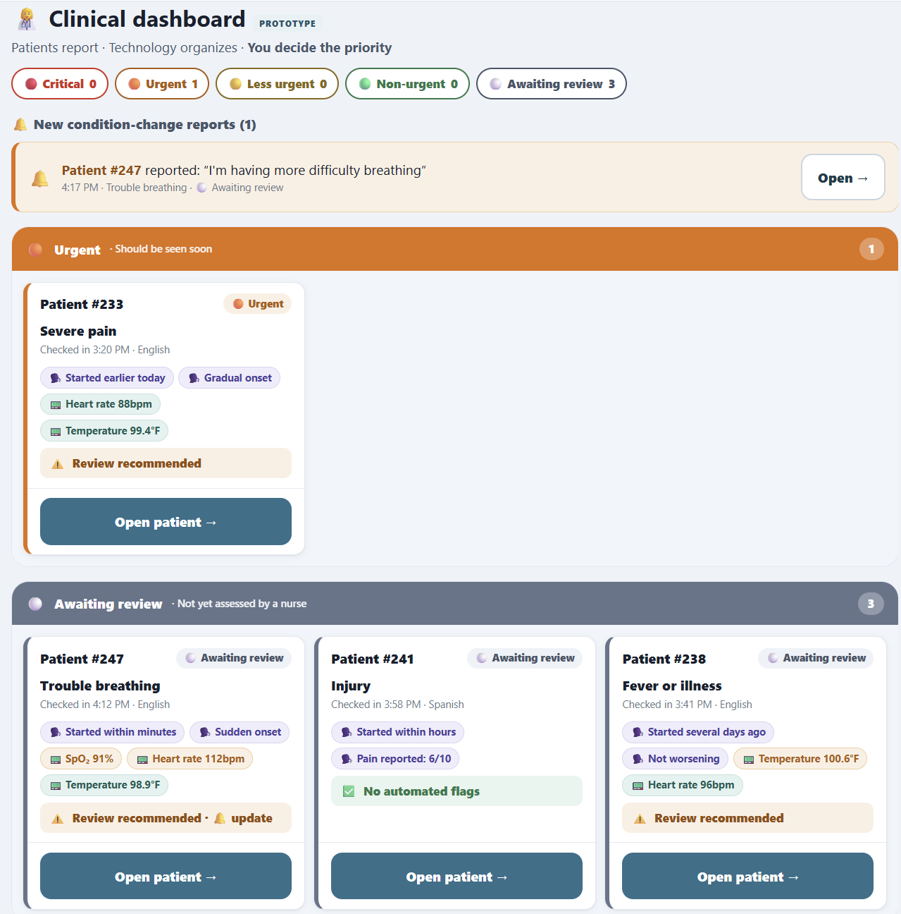

A patient intake & triage-support prototype for emergency departments built on one principle: “Patients report → Technology organizes → Clinical staff decide.” It gathers structured information before clinical assessment and surfaces what may deserve prompt review — without ever diagnosing or ranking patients itself.

Emergency rooms lose precious time to repetitive information-gathering, and patients are unreliable at judging their own urgency — research shows roughly 65% overestimate and 8% underestimate how serious their condition is. The challenge: help staff get better information faster without letting software make medical decisions it isn't qualified to make.
Research how ER triage actually works, then design and build a functional, accessible web prototype that supports patient prioritization and organization — while keeping every final clinical decision firmly with qualified staff.
Studied triage protocols and cited clinical references (ESI high-risk vital-signs, NCBI thresholds) to ground the design. Using AI-assisted development with Kiro, translated that research into a single-page app with three views — Patient, Clinician, and a Case study. Designed an adaptive one-question-per-screen intake flow, a non-diagnostic flagging engine that explains why something is flagged, and a nurse dashboard that visually separates patient-reported from measured data. Baked in accessibility throughout: 56px touch targets, high contrast, plain language, keyboard navigation, ARIA live regions, and “color is never the only signal.”
Delivered a fully working, dependency-free prototype demonstrating a safe, human-centered triage-support model — flags surface urgent information with plain-language reasons, patients cannot self-assign priority, and no measurement is ever invented. The result is a polished portfolio piece that shows the full arc from research → design decisions → accessible, shippable build.
- 🩺 Non-diagnostic “review recommended” engine with explainable reasons
- ♿ Accessibility-first: keyboard, screen-reader, reduced-motion support
- 🤖 Built rapidly with Kiro AI, keeping design decisions human-owned
- 🧠 Grounded in real clinical research & cited evidence